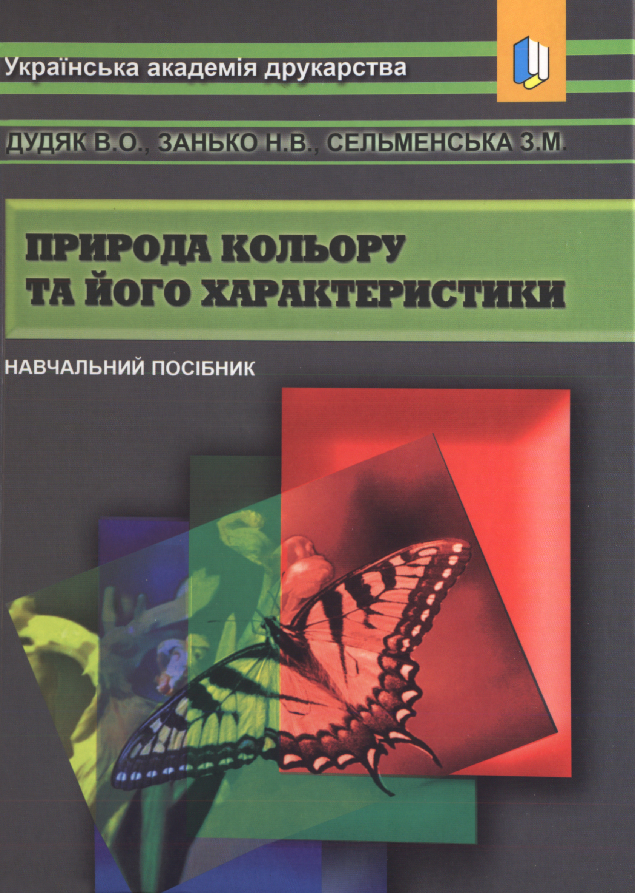

|
Природа кольору
та його характеристики
Дудяк В.О., Занько Н.В., Сельменська З.М. |
Управління
повноваженнями в системах
захисту інформаціїДурняк Б.В., Сабат В.І., Шведова Л.Є. |
Інформаційні
технології моделювання
видавничих процесівПіх І.В., Сеньківський В.М. |
Проектування реклами
в мережі інтернет
Дурняк Б.В., Коростіль О.Ю.-Ю. |
Стандарти в
поліграфії та
видавничій справіДурняк Б.В., Ткаченко В.П., Чеботарьова І.Б. |
Виробниче
підприємство
Гузела О.І., Босак І.П. |
Поліграфія і
видавнича справа
Науково-технічний збірник |
Маркетинговий менеджмент
видавничої продукціїГлотова Г.І., Ковба Ж.М., Мохонько Г.А.,
Мартинів В.В. |
Семантичний захист
інформації в системах
документообігуДурняк Б.В., Сабат В.І. |
Магістерська робота студентки групи ТЕм-61 Тимощук Віри |